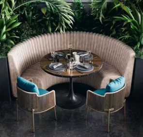
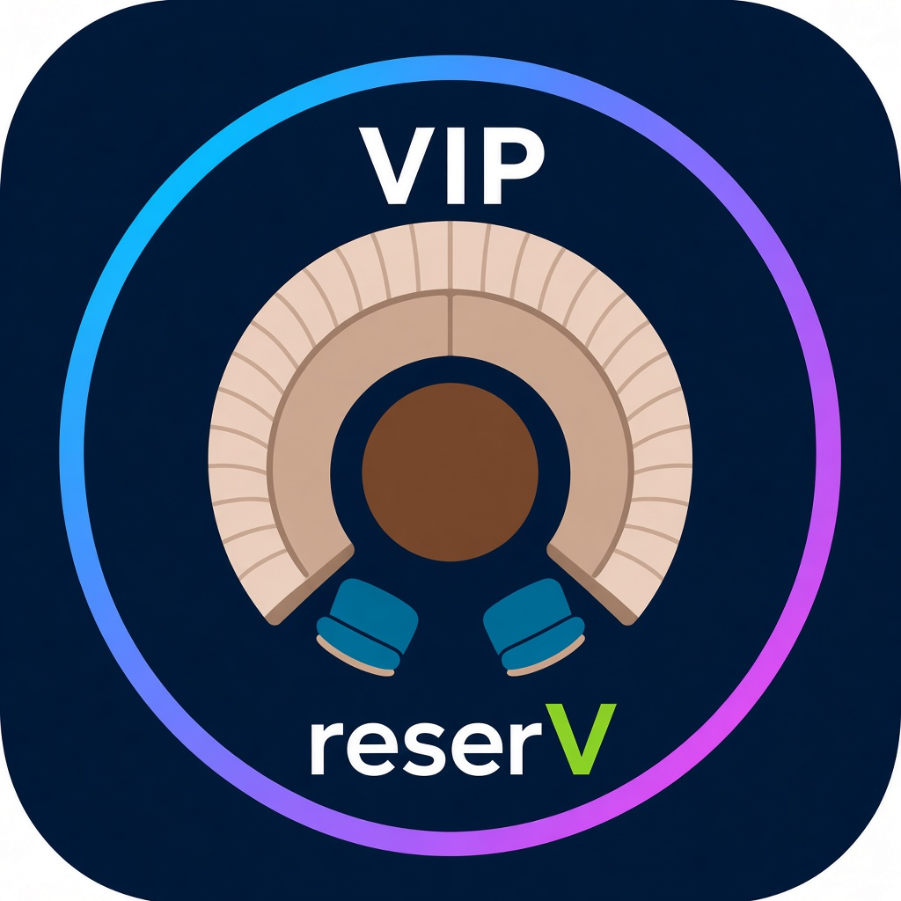
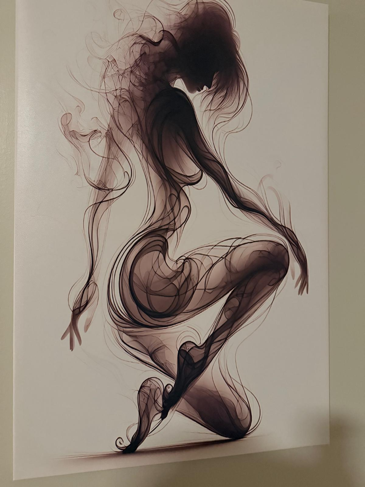
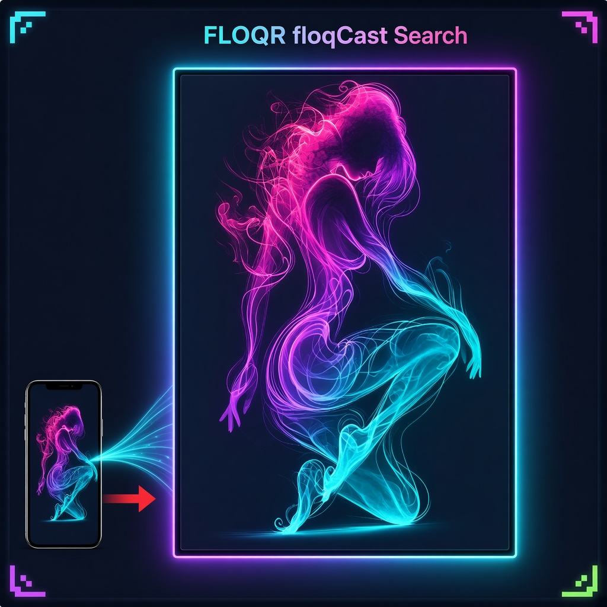
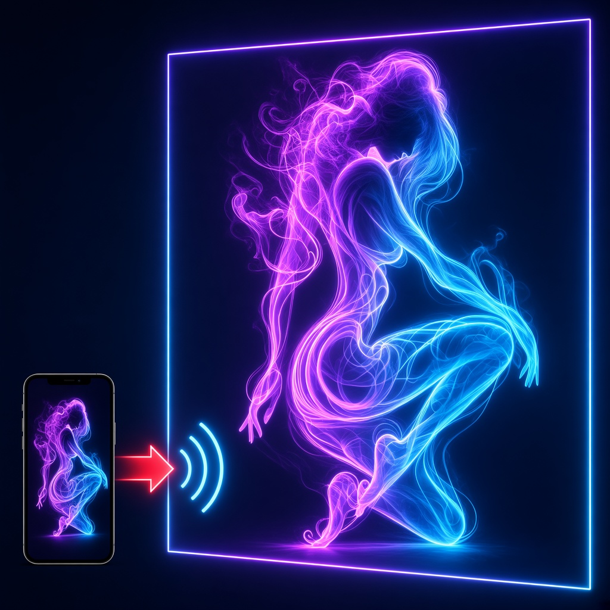

1) VIP reserV — top-down C booth + nested table
Inspiration: your booth photo (curve seat hugging round table). Goal: nested C around O, opening at bottom — not the old side/front banquette under a crescent table.




Open this file from the workspace (icon-review-vip-floqcast.html).
Production still uses images/vip-reserv-mark.svg and images/floqcast-icon.svg.
Palette locked to live FLOQR marks: ring/stroke #26d8ff → #7a5cff → #ff4fc9/#f43abf, lime V #dfff5a, VIP seat/table brown-red #b86852/#c9785c family, floqCast sil #ff6bcb → #c44dff → #26d8ff, cast red #ff2d55. No cream sofa / teal chairs off-palette.
Reply with which candidate to ship, then go-ahead to wire Search.
Inspiration: your booth photo (curve seat hugging round table). Goal: nested C around O, opening at bottom — not the old side/front banquette under a crescent table.


Same phone → LED cast chrome; LED / phone faces use your ink-smoke crouch silhouette instead of the solid woman mark.



Shown only on this page. Live styles.css unchanged until you approve.